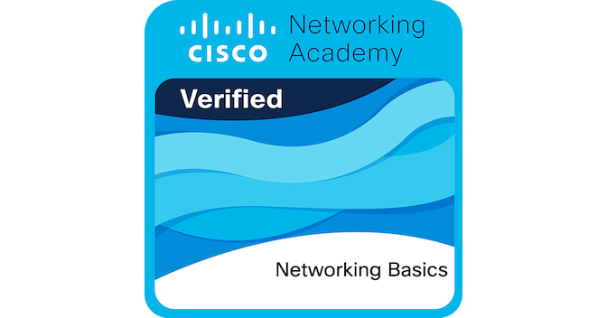

Cisco Networking Basics
Completed as part of foundational networking and IT studies. Focused on practical concepts in IP addressing, subnetting, routing, and core networking protocols.

Cisco Networking Basics Certification Badge
Topics Covered
- OSI model and packet encapsulation
- IP addressing and subnetting
- MAC addressing and ARP resolution
- Basic routing and switching
- Packet Tracer practice labs
Study Resources
- Cisco Networking Basics course on Skills for All
- Packet Tracer hands-on labs
- NetworkChuck & David Bombal tutorials
Skills Demonstrated
- Understanding of IP addressing and subnetting
- Basic CLI usage for Cisco device simulation
- Layer 2 and Layer 3 network concepts
- Practical network troubleshooting flow